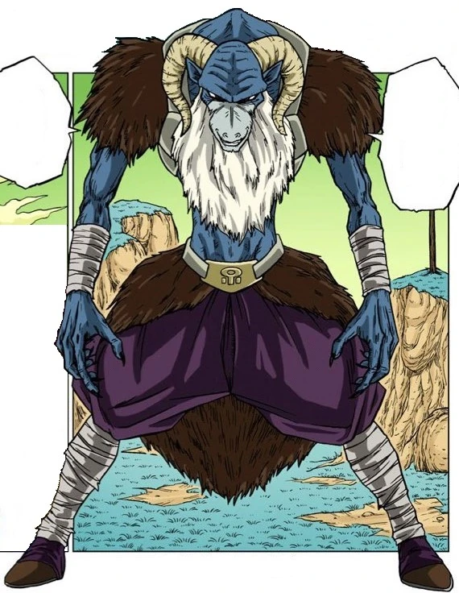

Moro (モロ Moro), known as "Planet-Eater Moro" or "Moro, Consumer of Worlds" (星喰いのモロ Hoshikui no Moro), is a powerful wizard who threatened Universe 7 about ten million years ago.
He is the main antagonist of the Galactic Patrol Prisoner Saga.
Moro has no respect for life in general.
Rather, he views them all as food for his pleasure and scoffs at people who try to stop him.
He is very deceitful and manipulative, having used Cranberry to help restore his power, immediately eliminating him after he outlived his usefulness, as well as feigning his weakness until he was able to absorb enough of Vegeta's energy to defeat him.
Also, despite his arrogance, Moro is not without caution, as when he learned that Goku and Vegeta were training for a rematch with him, he decided to go absorb as many people and planets' energy as possible so he would be stronger too once they confront him again.
At the same time, because of his selfishness and amorality, Moro has contempt for real empowerment through training, firmly believing that those who do are idiots.
Moro normally speaks in a calm, collected tone, but his calm demeanor gives way to extreme rage when in the presence of the Grand Supreme Kai, since he has harbored a grudge against him for eons.
In fact, Moro also has no respect for the gods in general, since by destroying everything, they create, he believes he is above them and, therefore, is not subject to having his actions judged by them.
He also demonstrates a mocking sadism when he has the advantage over his opponents by using his opponent's own techniques against them and deriding them constantly.
Moro holds a strong command and does not like it when his subordinates act on their own.
This is seen when the Macareni Gang went to Earth without informing Moro beforehand, and upon learning this, Moro sent a scouting party to search the planet and ordered Shimorekka to kill the Macareni Gang, stating traitors acting on their own are dispensable.
Aside from Seven-Three, who Moro had special interest in due to his Copy Ability, he cares nothing for the wellbeing of his own men, and purposefully pumped more energy into Saganbo, knowing the damage it was doing to his body, and eventually caused his death, even going so far as to mock him afterwards.
He then told Goku that he saw him only as a soldier of which more can be collected.
This uncaring nature later comes into play once again when backed into a corner, as Moro had no qualms over killing a concerned Shimorekka (due to being a possible interference) and proceeded to literally consume Seven-Three and his abilities as to regain the advantage in battle.
In battle, Moro shows extreme arrogant pride in his powers to the point of proclaiming himself as the "supreme existence" of Universe 7.
Because of this, he believes himself to be completely unsurpassed, remaining in constant denial whenever he is oppressed or subdued.
Notably, the warlock has shown a genuine fear of dying, having acquired the firm conviction that by devouring all forms of life created by the gods since immemorial times, he is destined to live forever.
As such, if the possibility of him being killed in battle becomes real, he will become erratic and fierce when pressed, but if he realizes that he will have no chance of victory, Moro will cower to the point of retreating and even resort to faked clemency to avoid being killed, and possibly to trick them into letting him regain his strength.
A very characteristic mental trait shown by Moro was his inability to have any personal growth.
Even when he was offered a chance to repent and return peacefully to prison, he remained adamant about wanting to rethink his actions, remaining solely eager to obtain just more power so that he could live freely doing whatever he wanted without consequence.
He was also unable to recognize that his power acquired by stealing them from others was inferior when compared to those who obtained it through self-effort.
Ultimately, as a result of the immense power he gained from Merus, Moro eventually goes insane, degenerating into a cackling mess, which ultimately caused his death.